Places we’ve been
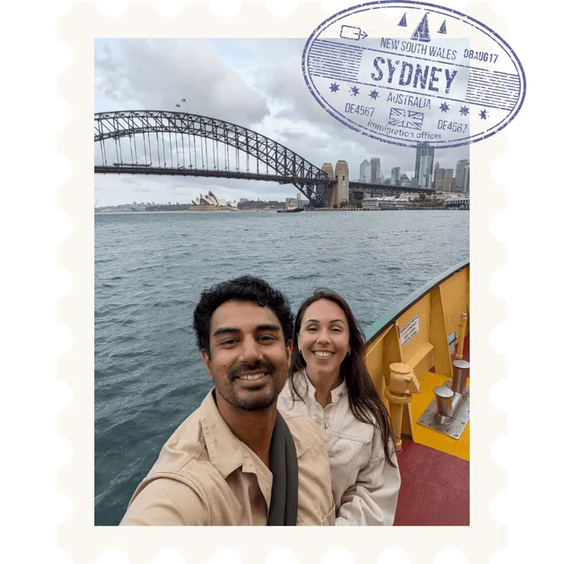
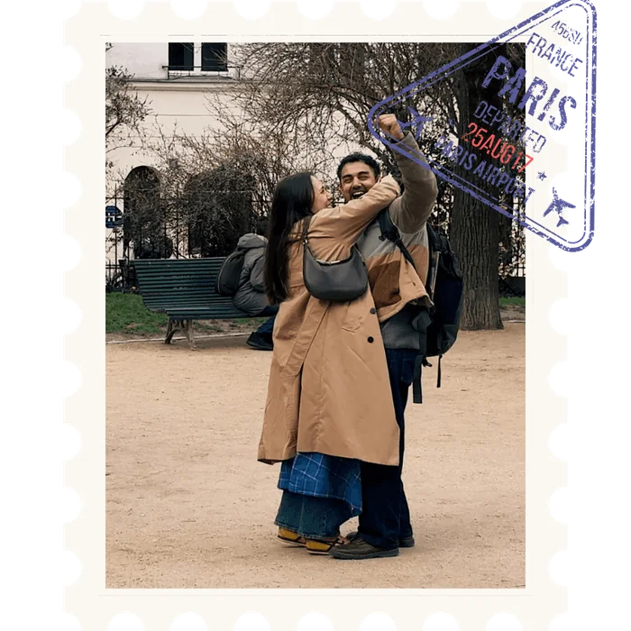
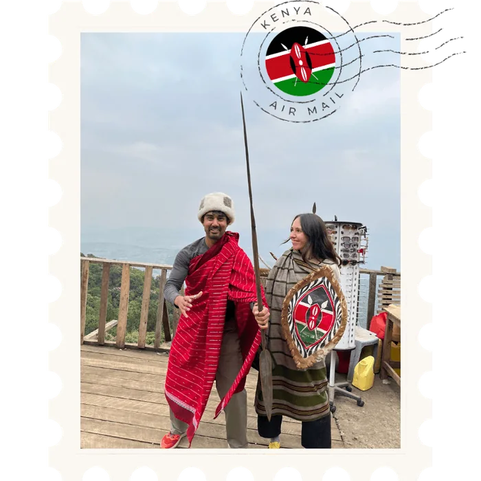
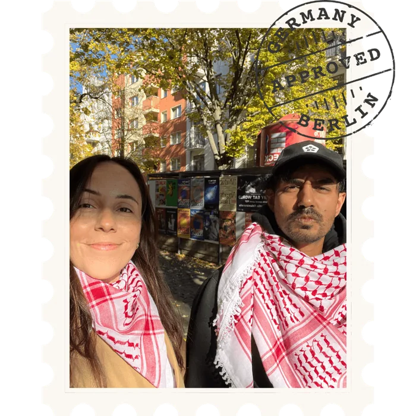
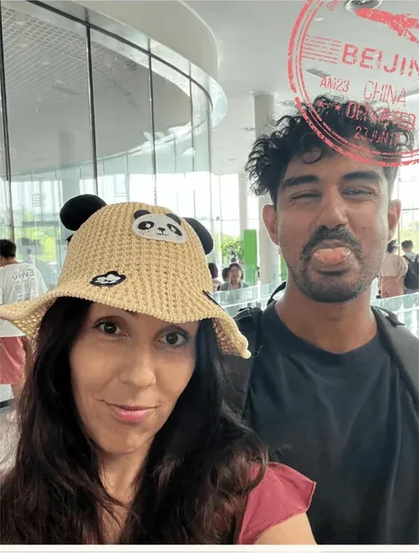
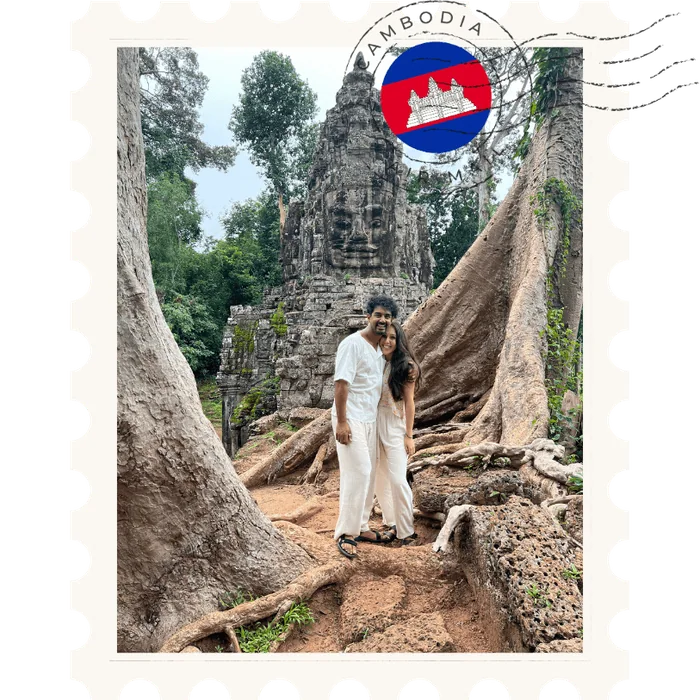
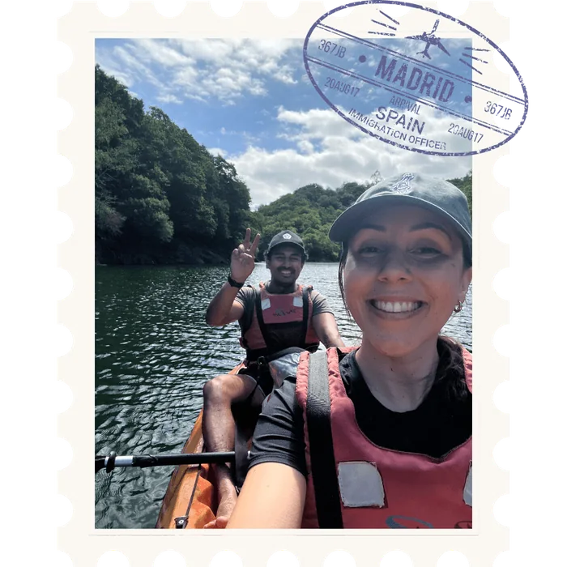
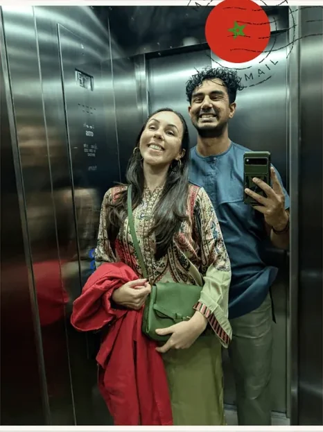
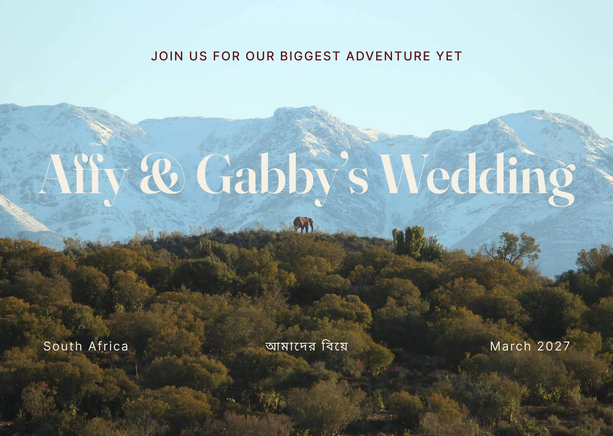
Our wedding timeline
I
Sunday, 14 March 2027
II
Tuesday, 16 March 2027
III
Saturday, 20 March 2027
Places we’ve been








Event 01
An ‘adda’ under the mountain
An adda is a Bengali tradition, essentially the art of hanging out. Think long, easy, unstructured conversation with good people, unhurried chats that go wherever they go. That’s exactly the spirit we want to start the week with: a mountain-side picnic where everyone can meet each other, swap some stories, play some games, and stay for as long as you like. We’ll hand out your Holud outfit here, so do come to this one if you can.
Event 02
Gilded and ungovernable
The holud is a traditional ceremony dating back to Affy’s forefathers’ times, when marriages were arranged and the bride and groom would be meeting for the first time. The traditions include “looking through the mirror”, where the two of them see each other first through the gaze of a mirror. There will also be skits, which will be fun: Gabby’s friends acting out her past so we get a sneak peek at who Affy is really getting tied up with, and Affy’s mates doing a massive disservice to his spotless one.
Event 03
A wild dream at the edge of the world
Following the beautiful Route 62, coaches will pick us up from Cape Town and carry everyone about five hours into the wilderness of the Karoo, arriving the night before. During the day you’ll spot giraffes, zebras and the rest of it. On the day itself we’ll have a toast, speeches, and one last celebration to tie out the adventure, dancing into the night under the stars.
Logistics
The week happens in two places. The picnic and the Holud are both in Cape Town; the wedding is at Oudtshoorn, about four to five hours drive away. To help you get there we’ll be chartering coaches from Cape Town on the Friday morning, at no cost to you. If you’d rather rent a car and make your own journey of it, you’re more than welcome.
We’re paying for it. Tell us on the RSVP if you want a seat and we’ll sort the rest.
The inland route through the Little Karoo: beautiful open roads, mountain passes, farm stalls. Worth stretching over two days if you can.
Logistics
Beds are arranged differently depending on your invitation, so this bit sits behind a password. Pop in the one we sent you and we’ll show you yours.
It’s the same password we sent with your invitation. If you can’t find it, you can ask us for another on the next page.
Sign inYou’re staying with us at Buffelsdrift, right on the game reserve, so you don’t have to think about getting anywhere on the day. The giraffes wander past the waterhole at breakfast and nobody drives home afterwards.
A game drive is included with your stay. One safari or elephant experience per person, on us to arrange — we’ll be running them across several days because everyone can’t go at once, so we’ll tell you your slot nearer the time rather than asking you to pick now.
Rooms are booked through us, and you’ll settle up for yours. Two nights, Friday and Saturday, covering the bed, both breakfasts and the game drive. These are the three tent types — we’ll confirm what yours costs once everyone is placed.
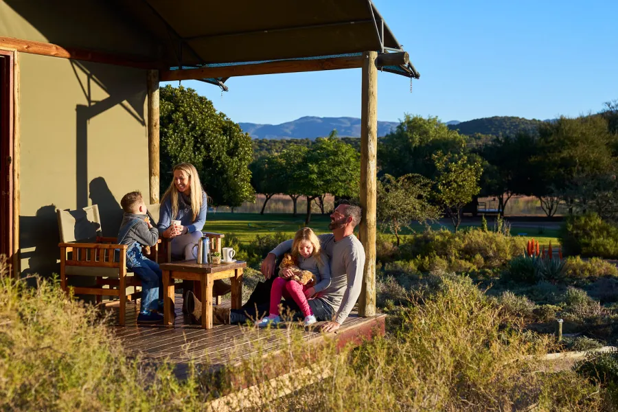
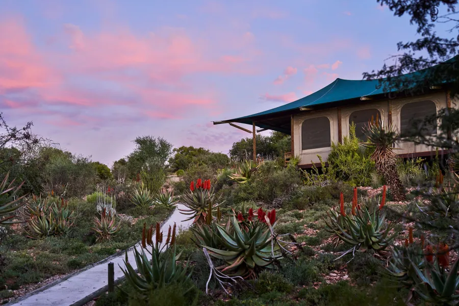
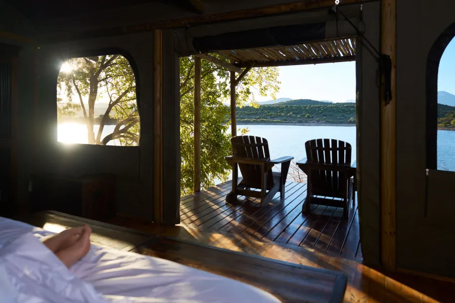
Yours is covered. We’re taking care of the room and the game drive — you just need to get yourself to Cape Town. The RSVP won’t ask you anything about paying for it. We’ll match you to a tent ourselves and tell you which one nearer the time.
We’ll match you to a tent rather than ask you to choose one. There are 76 guest beds on the reserve and close to that many people staying, so the four-sleepers have to go four-up for everyone to fit — the RSVP just asks whether you’d be happy in a family tent with another couple, and we’ll do the matchmaking. Once everyone is placed, Buffelsdrift will email you a payment link with your exact amount.
You can stay on for the Sunday. The safari runs again on the Sunday morning and plenty of people will want a slower exit. Say so on the RSVP and we’ll come back to you with the rate for the extra night.
Children under 3 stay free, 4 to 12 are half price. We’ve already negotiated a discount off the lodge’s rates for the Friday night, so what you’ll be quoted is better than their published price.
Oudtshoorn is a small town and the wedding weekend will fill it, so book early. Three we’d point you at, cheapest first.

R1 762 for the two nights

R4 068 for the two nights

R4 800 for the two nights
You can still do a game drive. Buffelsdrift is open to day visitors, and we’ve arranged a reduced rate for our guests — around $50 a ticket rather than the lodge’s usual price. We’ll share the details and how to book closer to the time.
Prices are what Booking.com showed for a double room for two adults over the wedding weekend, Friday 19 to Sunday 21 March 2027, and they move. Book it yourself, and book it early.
Not your details?
Practical
We know you’ll be travelling from all over the world and we hope you can travel light. Cape Town in March is very pleasant: expect 25 degrees and a little bit of wind. The Karoo is a few degrees warmer and a fair bit drier, but it cools off marvellously during the evening.
All of this is a steer, not a rule. It’s here to save you the guessing, not to hold you to anything. If you’d rather wear something else, please do — we’d far rather you turned up feeling like yourself than spent a fortnight hunting down exactly the right thing.
Casual and cool. It’s a garden, on grass, in the afternoon — so bring shoes that agree with that.
We’re providing the outfits. A kurta or a sari, handed out at the picnic on the 14th. Come dressed to get changed — or wear your own thing instead if you’d rather.
Formal attire. The one practical warning: it’s a game lodge, so a good part of the evening happens on grass and gravel, and the Karoo cools off properly once the sun goes. Heels will struggle, and you’ll want a second layer by the time we’re dancing.
Everything else
Each one left blank is a WhatsApp you’ll get instead.
Yes — kids are more than welcome. Bring them to all three events. There’s plenty of room to run around at the picnic, and the game lodge is about as good a place as a child could hope to spend a weekend.
Just add them as guests on the RSVP like everyone else, so we count them for food and seats on the coach.
You’re staying on the reserve, so a game drive is included with your stay — a bush safari or the elephant experience, your pick. We’ll be running them across several days because everyone can’t go at once, so we’ll tell you your slot nearer the time rather than asking you to choose now.
A game drive isn’t included with a room in town, but Buffelsdrift is open to day visitors and we’ve arranged a reduced rate for our guests — around $50 a ticket rather than the lodge’s usual price. We’ll share the details and how to book closer to the time. You can also do any of these at the lodge’s own prices:
| Activity | Adult | Child 4–12 |
|---|---|---|
| Bush safari | R870 | R435 |
| Night drive | R870 | R435 |
| Lion feeding | R870 | R435 |
| Meerkat safari 8 yrs and up | R1 030 | R515 |
| Elephant experience | R590 | R295 |
| Elephant observation | R1 135 | R565 |
| Cheetah experience 12 yrs and up, min 2 people | R1 665 | — |
Under 3s go free. Prices exclude Buffelsdrift’s mandatory conservation fee and can change without notice — these are their published rates for October 2026 to September 2027.
You’ve probably flown half way around the world to be at the wedding. That’s our gift, and we don’t expect anything else from you.
That said, we know some people are adamant — and we genuinely can’t carry anything physical back. So if you’d really like to contribute, you can pay into Revolut link needed.
Answer needed. Hot days, cold nights, and whatever the rain situation actually is.
Answer needed. Matters a lot to anyone taking the coach.
One last thing
He took Gabby once, and we got her back. Now he’s waiting on the road into Oudtshoorn with the whole flock behind him — and there is a crocodile pit at the end of it.
Jump the flock, shove Bibi into the pit, and you get to name a song we’ll actually play at Buffelsdrift.
Press Run to play here, or open it full size — better on a phone.